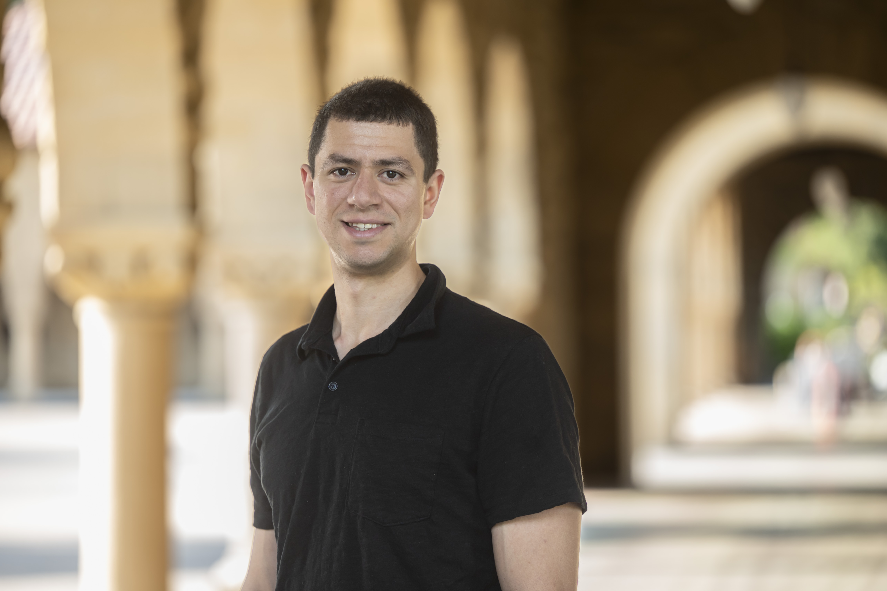

Matthew Nicoletti
Szego Assistant Professor, Department of Mathematics, Stanford University
nicoletm at stanford dot edu | Google Scholar | arXiv | ORCID
I am a Szego Assistant Professor (and NSF postdoc) in the Department of Mathematics at Stanford University. Before coming to Stanford, I was an NSF Postdoctoral Fellow at UC Berkeley and completed my PhD in mathematics at MIT under the supervision of Alexei Borodin.
Research interests
I am interested in universal phenomena in probability theory and statistical physics; for example, I study interacting particle systems (similar to the Asymmetric Simple Exclusion Process) and lattice models (similar to the Ising model). I view integrable systems and exactly solvable models both as physically relevant special cases and as useful tools for understanding phase transitions and universal phenomena more broadly. My work therefore often combines analysis and probability with the more combinatorial and algebraic framework of integrability and exact solvability.
Former institutions
- Stanford University, Szego Assistant Professor (2025-present).
- University of California, Berkeley, NSF Postdoctoral Fellow (2024-2025).
- Massachusetts Institute of Technology, PhD in Mathematics (2024). Advisor: Alexei Borodin.
- University of California, Berkeley, BA in Mathematics and Computer Science (2019).
